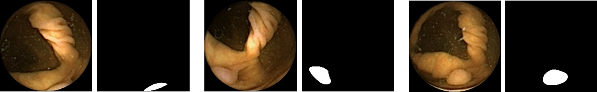
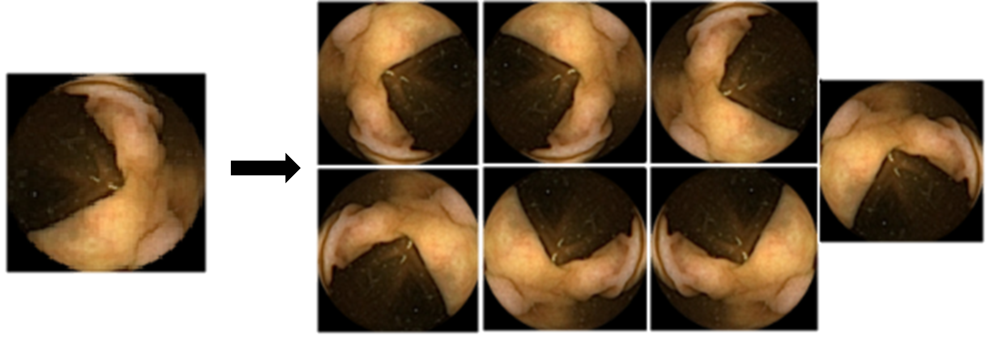
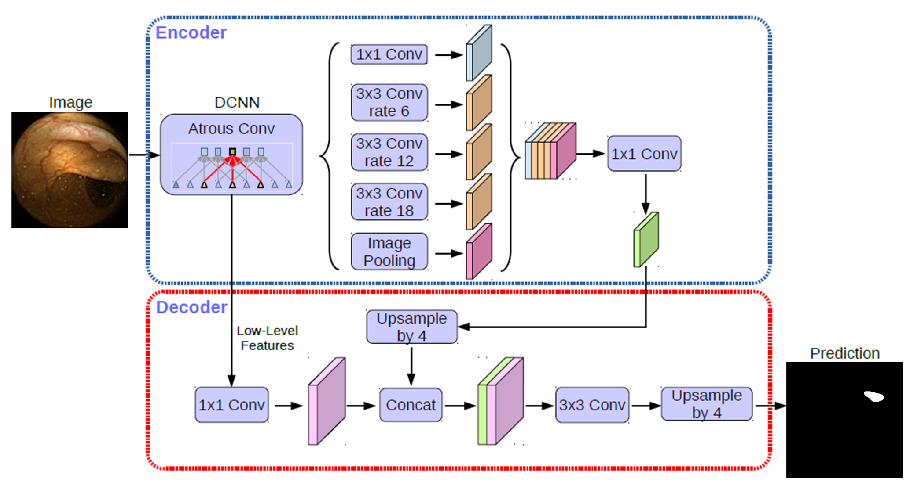
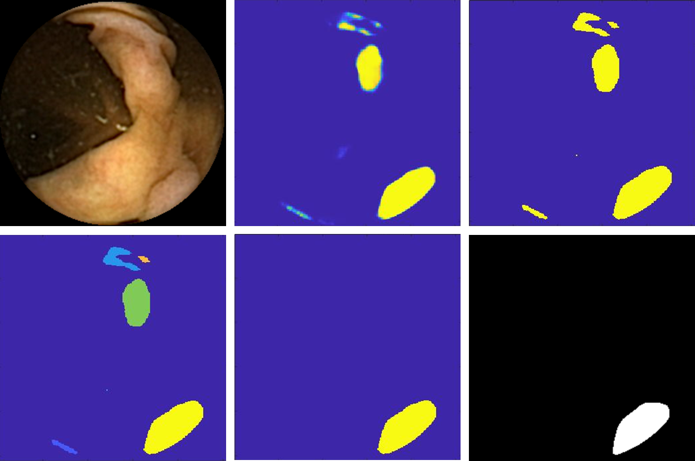
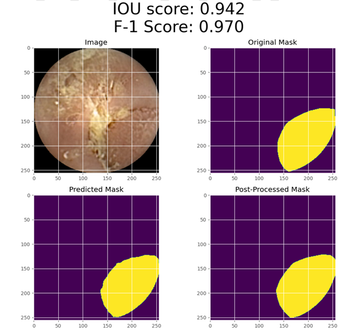
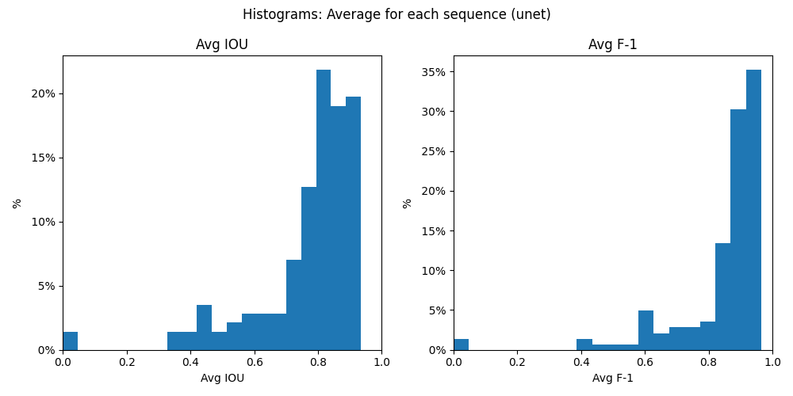
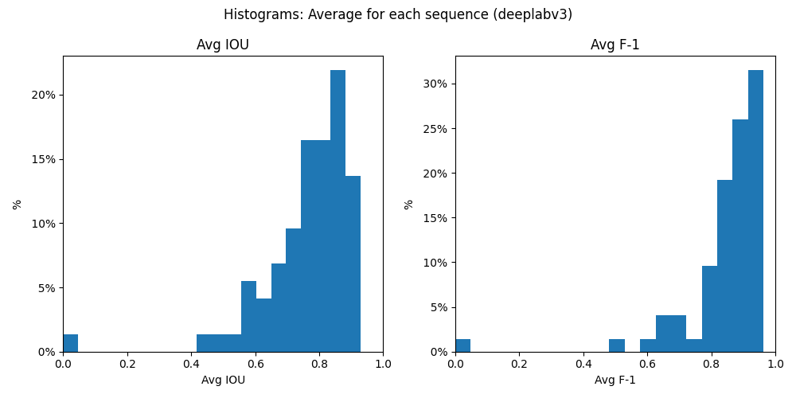
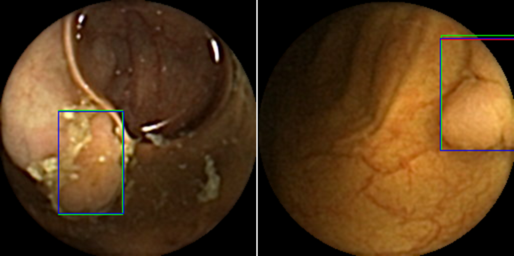

Using Deep Learning for Automatic
Segmentation of Polyp Image Sequences
Learn More
Introduction
- PILLCAM® COLON is a camera within a capsule that captures images as it travels through the digestive system.
- Physicians can use these images to detect and diagnose gastrointestinal diseases and identify polyps.
- Medtronic is looking for an automated solution for increasing the volume of annotated images by using segmentation networks.
Goals
- Train segmentation networks using a small fraction of non-consecutive images taken by PILLCAM® COLON (3 pairs of image, mask).
- Use the trained model to segment the entire sequence.
- Hypothesis: By training a separate network for each sequence - the overfitting to the sequence should provide very accurate results.


Data Processing
- Dataset split: For each sequence, 3 images with optimal variance are selected for the training dataset. The rest of the images are used for inference and validation (optional).
- Pre-processing: Augmentations are applied in order to increase the size of the training dataset : 90° rotations, horizontal flip, and vertical flip.

Training Segmentation Networks
- We evaluated 3 different types of segmentation networks: Unet, PSPnet, DeepLabv3+.
- The augmented training dataset is now used to train a segmentation network.
- The resulting model should have a high level of overfit to the training dataset.

Inference And Post-Processing
- The trained model is saved, and used to generate masks for the entire sequence (including the images used for training).
- Post-Processing algorithms are applied to improve the quality of the resulting masks.

Evaluation
- Metrics: 2 performance metrics are calculated for each mask:
- IoU accuracy (Intersection over Union, AKA Jaccard index)
- F1 Score (Harmonic mean of precision and recall)
- Overfit: If the training process was successful, we expect to see very high accuracy scores for the training dataset.
- Inference: Our hypothesis assumes that the rest of the sequence will also have high levels of accuracy.

Train Dataset (70%)
- Model parameters were fine-tuned using the Train dataset.
- The average level of accuracy for these sequences was very high.
- All 3 segmentation networks evaluated performed well, and produced similar results.

Test dataset (30%)
- After the model parameters were tuned and finalized, we tested our methodology on the remaining sequences (Test dataset).
- Similarly to the Train dataset, average accuracy levels for these sequences were also very high, and all 3 networks performed well.

Proof of Concept
- We met our project's main goal - providing a proof of concept tool for automatic segmentation of polyp image sequences.
- The results support our hypothesis - By training a separate network for each sequence, the overfitting to the sequence provided very accurate results.
| Sequences with F1 average > 90% |
46% |
| Sequences with F1 average > 80% |
34% |
| Sequences with F1 average < 50% |
3% |
Sequence Segmentation Framework
- We designed and implemented a framework of tools that automate the process of segmentation across a large volume of sequences.
- This framework was designed to allow for quick and easy changes in the network type and hyperparameters using a user-friendly configuration file, API functions, and command-line interface.
- We hope these tools will help support any future research based on our project.
Deep Learning Experience
- We gained valuable hands-on experience in the field of deep learning.
- This experience included learning about and working with multiple different segmentation networks, optimizers, performance metrics, and image processing libraries.
- We are very thankful for participating in this industrial project, and having an opportunity to research a highly unique problem that is rarely encountered in a purely academic setting.